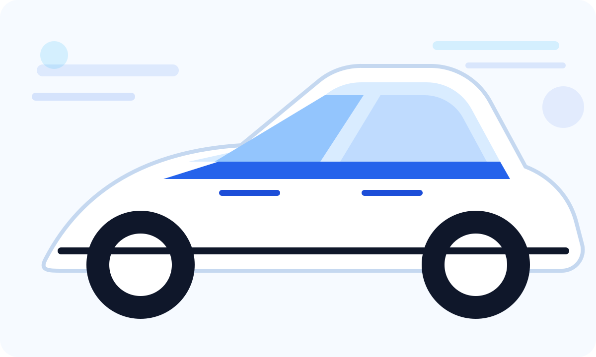
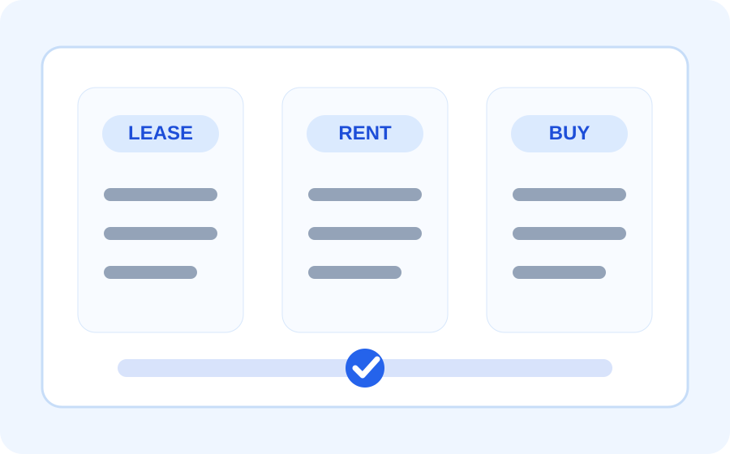

조건을 먼저 봅니다
차종, 이용 기간, 초기 비용, 월 납입 기준을 먼저 정리합니다.
AUTO LEASENER
자동차를 좋아하는 사람에게 필요한 조건 비교, 견적 확인, 상담 연결을 한 화면에서 깔끔하게 안내합니다.

차종, 이용 기간, 초기 비용, 월 납입 기준을 먼저 정리합니다.
리스, 장기렌트, 구매 중 무엇이 더 맞는지 쉽게 비교합니다.
확인된 조건을 바탕으로 상담과 견적 확인으로 이어집니다.
Compare
리스, 렌트, 구매는 모두 장단점이 다릅니다. 핵심은 내 상황에 맞는 조건을 먼저 보는 것입니다.

일반 번호판을 선호하거나 원하는 차량을 선택하고 싶은 분에게 맞는 방식입니다.
보험, 세금, 차량 관리 부담을 줄이고 싶은 분이 자주 비교하는 방식입니다.
차량을 오래 보유하고 싶은 분에게 익숙한 방식입니다. 초기 비용과 유지비를 함께 봐야 합니다.
Point
허위 견적이나 과한 혜택 표현보다, 실제 조건을 확인하고 상담 시간을 줄이는 흐름을 우선합니다.
Process
필요한 질문만 먼저 정리하고, 조건 비교 후 다음 행동으로 이어지게 만듭니다.
국산차, 수입차, 신차, 중고차 중 원하는 방향을 정합니다.
초기 비용과 월 비용 기준을 나누어 확인합니다.
리스, 렌트, 구매 중 조건에 맞는 방식을 비교합니다.
확인된 조건으로 상담과 견적 확인을 진행합니다.
Leasejun TV
자동차 리스와 수입차 정보, 실제 상담 흐름을 영상으로 쉽게 볼 수 있습니다. 홈페이지 메인에서도 리스준 채널로 바로 이동할 수 있게 연결했습니다.
Why AUTO LEASENER
한 화면에 핵심만 남겨 모바일에서도 읽기 쉽게 구성했습니다.
비교 기준을 본 뒤 상담으로 넘어가도록 흐름을 단순하게 만들었습니다.
제목, 설명, 구조화 데이터, 사이트맵, robots 파일을 함께 준비했습니다.
가격과 혜택은 단정하지 않고, 조건 확인과 상담 기준으로 안내합니다.
FAQ
리스는 금융 상품 성격이 강하고, 장기렌트는 렌트사 명의 차량을 일정 기간 이용하는 방식입니다. 보험, 번호판, 비용 처리, 인수 조건을 함께 확인해야 합니다.
아니요. 초기 비용, 주행거리, 보험, 계약 기간, 반납 조건까지 함께 봐야 실제 부담을 알 수 있습니다.
가능한 방향으로 구성했습니다. 실제 가능 차종과 조건은 상담 시점의 재고와 프로모션에 따라 달라질 수 있습니다.
Contact
차종, 예산, 이용 기간을 알려주시면 리스·렌트·구매 방향을 더 쉽게 정리할 수 있습니다.